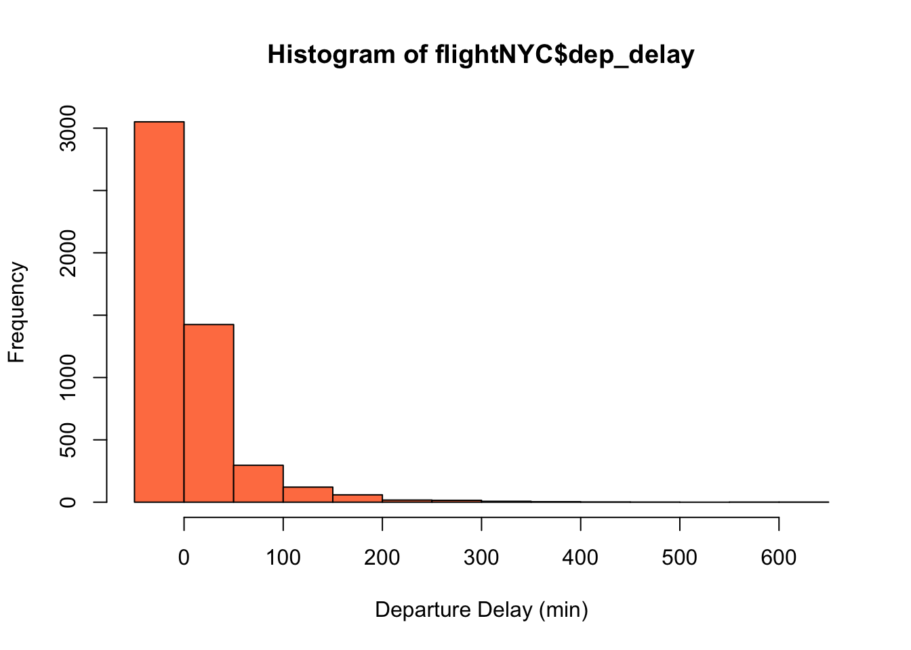
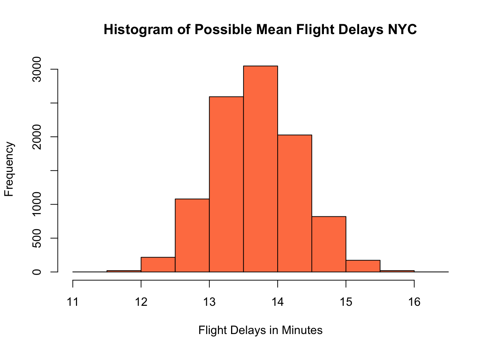
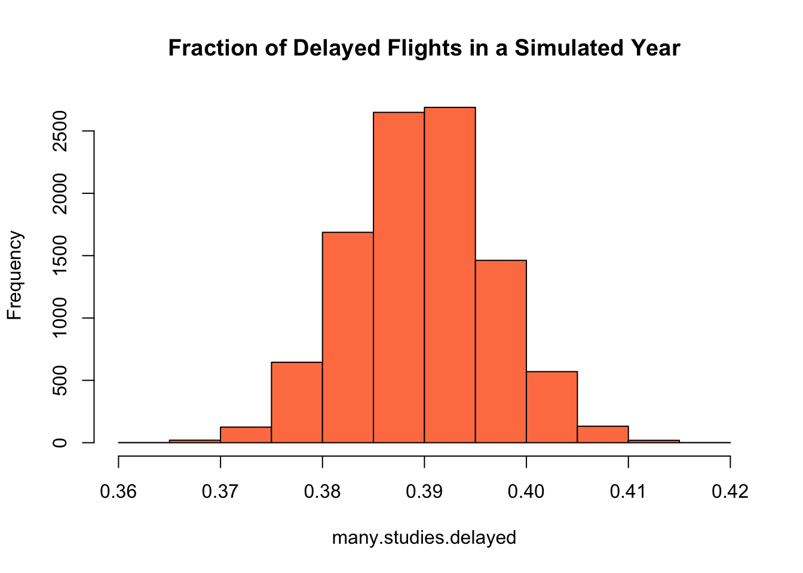

Chapter 10 Confidence Intervals
10.1 Introduction NYC Flights Dataset
To introduce the idea of a confidence interval we will look at the NYC flights data set. This data set has flight data for over 30k flights which left the three NYC airports in 2013.
The below commands load this data set into R and looks at the columns names. Remember you can also use the ?flightNYC and View(flightNYC) commands to get an idea of what is in this data set.
data("flightNYC")
colnames(flightNYC)## [1] "month" "day" "dep_time" "sched_dep_time"
## [5] "dep_delay" "arr_time" "sched_arr_time" "arr_delay"
## [9] "carrier" "flight" "origin" "dest"
## [13] "air_time" "distance"For the purposes of this lecture we will focus on the column flightNYC$dep_delay which gives the length of departures delays (in minutes) for each flight.
sample.size <- length(flightNYC$dep_delay)
print(sample.size)## [1] 5000We can see this data set has 5000 measurements of the flight delays at takeoff. To begin we will focus on estimating the mean delay time of flights leaving NYC.
10.2 Mean Flight Delays
As expected the first step to any exploratory data analysis is make a graph of the distribution, since the dep_delay column is a continuous statistical variable:
hist(flightNYC$dep_delay, col = "coral", xlab = "Departure Delay (min)")
We can see that most of the delays are relatively small, with a few which are very large. Also, notice the distribution of delays is distinctly NOT mound shaped. From the data we can also calculate the sample mean of the delays.
mean(flightNYC$dep_delay)## [1] 13.6994However, we expect that if we are trying to forecast future delays and collected data again for the next year we would expect this mean delay time to change! The next year would have different flights with different weather conditions, etc. This could cause problems as science is founded on the idea that other should be able to repeat our experiments and arrive at the same conclusions.
This produces a logical conundrum, because if we just report the sample mean that we found, we are virtually guaranteed that if someone repeated our analysis they would find a different answer! Even more importantly, the sample mean is most likely not exactly equal to the population mean we are trying to estimate. This leads us to the important idea of a confidence interval. We can use confidence intervals to report an interval \((a,b)\) of values which we can be confident contains the population mean. Instead of reporting a single value for the mean delay we give a range of values. This also ensures we don’t oversell the precision of our results.
Perhaps, the most intuitive way of coming up with our confidence interval is to repeat the analysis many times and report the range of values (min to max) as the confidence interval. If the answer changes quite a lot each time we conduct the analysis then we should feel less confident about our results and therefore give a wider interval. In real-life repeating experiments may be impossible, impractical, expensive, boring, etc. For the flight data case we don’t have the time to collect 100 years of data and examine how variable the annual average of flight delays is.
However, using the power of computers we can simulate this process quite easily.
second.study <- sample(flightNYC$dep_delay, 5000, replace = TRUE) ##5000 because that is the number of flights we have data for
mean(second.study)## [1] 12.9472Notice that we I simulated this process I used the keyword replace=TRUE this is important as otherwise our simulation of recording flight delay times would have exactly the same flights as the original data! This keyword means we are allowed to measure the same flight twice and makes our simulation different on each run.
If we repeated his simulation of measuring delays many times we would get a distribution of values, representing the results from thousands of replications of the analysis.
many.studies <- replicate(10000, mean(sample(flightNYC$dep_delay, 5000, replace = TRUE))) ## measure the sample mean for 5000 flights 10 thousands times
hist(many.studies, col = "coral", xlab = "Flight Delays in Minutes", main = "Histogram of Possible Mean Flight Delays NYC")
As a side note you may notice that this distribution of sample means looks very mound-shaped (Normal distribution). This is the central limit theorem at work!! Recall that the sample mean has the special property that sampling errors follow a normal distribution for large enough sample sizes. More on this observation in a minute.
Now that we have an idea about all the possible values our analysis could have produced we can compute an interval containing say 95% of these sample mean outputs. We call this interval the 95% confidence interval. We can find this using the quantile command quite easily:
quantile(many.studies, c(0.025, 0.975))## 2.5% 97.5%
## 12.51400 14.93681What does this confidence interval actually mean? Well we can’t really say that there in a 95% chance that our interval above contains the true population mean \(\mu\). This is because the true population mean of flight delays at NYC is a fixed but generally unknown number. The interval either contains the true mean or it doesn’t! However, here is what we can say about our confidence interval. If we have a long career in business analytics and form many thousands of 95% confidence intervals for various measurements, then we can expect that about 95% of our CIs would contain the true population parameter. We can’t say which ones were right and wrong for sure, but we can be confident that if we make enough of 95% confidence intervals we will be right about 95% of the time.
The simulation and re-sampling process we used above to generate confidence intervals is called bootstrapping in statistics. To use it you don’t need to remember any formulas or theorems and it will work for whatever point estimator we could possibly want. For example, we could find the 95% confidence interval for the median flight delays using the commands:
many.median.studies <- replicate(10000, median(sample(flightNYC$dep_delay, 5000,
replace = TRUE)))
quantile(many.median.studies, c(0.025, 0.975))## 2.5% 97.5%
## -2 -1Notice that the only change was to change the mean of each sample to the median. This versatility makes bootstrapping one of the most useful processes in statistics.
As a side note you will notice that performing a bootstrap analysis involves running two commands in R. One to run the simulations and one to form the confidence interval. I am lazy so I wrote a few functions in the HannayAppliedStats package to do both these commands for you automatically for some common point estimators. If you are using my package we could bootstrap the above confidence interval for the median using the command:
bootstrap.median.confidence(flightNYC$dep_delay, conf.level = 0.95)## [1] -2 -1You can find the 99% confidence interval for the median using:
bootstrap.median.confidence(flightNYC$dep_delay, conf.level = 0.99)## [1] -2 -1Exercise 10.1 Find the 99% Confidence Interval of the sample mean departure delays using bootstrapping
Exercise 10.2 Find the 95% Confidence Interval for the sample variance of the departure delays using bootstrapping
To learn more about how to interpret confidence intervals open the app “ConfidenceIntervals” by running the command:
runHannayApp("ConfidenceIntervals")and answer the questions in the app below:
Exercise 10.3 Back to the flight delays example if we increased our sample size in the original experiment to 10000 flights what would you expect to happen to to the width of our 95% confidence interval?
10.3 Shortcut Using the Central Limit Theorem
As noted above the distribution of sample means is expected to follow a Normal distribution as a consequence of the Central Limit Theorem. In addition we know that this normal distribution will have a standard deviation equal to the standard error \[\sigma_{\bar{X}}=\frac{\sigma}{\sqrt{N}}.\] Therefore, the empirical rule tells us that 95% of the outcomes in this normal distribution will occur in the interval \[(\bar{X}-2\sigma_{\bar{X}}, \bar{X}+2\sigma_{\bar{X}}).\] Moreover, if we wanted to have a 99% guarantee we could form the interval \[(\bar{X}-3\sigma_{\bar{X}}, \bar{X}+3\sigma_{\bar{X}}).\]
We already have \(\bar{X}\) (the sample mean) as:
mean(flightNYC$dep_delay)## [1] 13.6994However, to use the formula for the standard error \(\sigma_{\bar{X}}=\frac{\sigma}{\sqrt{N}}\) we need to know the population standard deviation \(\sigma\). This is difficult because if we don’t know what the mean flight delays is, in all likelihood we don’t know what the standard deviation is either!
One way around this logical trap is to use the sample standard deviation \(s\) as an estimate for the value of the population standard deviation \(\sigma\). In R we can find this value as
sd(flightNYC$dep_delay)## [1] 43.36428This is what is often done in practice and in old fashioned statistics. However, since the sample standard deviation is based on a sample it will change each time we conduct the experiment as well (as you saw in the exercise above). Fortunately, we have a fix for this issue. Instead of using a normal distribution we can use a distribution called the Student t distribution. This distribution accounts for the fact that our sample standard deviation is not a perfect estimate for the population standard deviation used in the CLT.
As usual if we use R we can avoid having to deal with the student t distribution directly. This brings us to perhaps the most important R command of the entire course:
t.test(flightNYC$dep_delay)##
## One Sample t-test
##
## data: flightNYC$dep_delay
## t = 22.339, df = 4999, p-value < 2.2e-16
## alternative hypothesis: true mean is not equal to 0
## 95 percent confidence interval:
## 12.49713 14.90167
## sample estimates:
## mean of x
## 13.6994This produces a lot of output which we will be learning about over the next few weeks. For now we can ignore all the output except the line which gives us the confidence interval. By default R will find a 95% confidence interval. Notice that this confidence interval is pretty close to the one we found using simulations above. This is because the distribution of sample means is close to a t distribution.
We could do a 99% confidence interval by changing one of the options to the t.test function.
t.test(flightNYC$dep_delay, conf.level = 0.99)##
## One Sample t-test
##
## data: flightNYC$dep_delay
## t = 22.339, df = 4999, p-value < 2.2e-16
## alternative hypothesis: true mean is not equal to 0
## 99 percent confidence interval:
## 12.11913 15.27967
## sample estimates:
## mean of x
## 13.6994Notice we could get almost the same thing using bootstrapping (with less assumptions).
bootstrap.mean.confidence(flightNYC$dep_delay, conf.level = 0.99)## [1] 12.17498 15.30520The Student t distribution becomes very close to the Normal distribution for large sample sizes. Therefore, most old-fashioned statistics textbooks usually define an entirely different test (called the z-test) for use with large sample sizes. If we are willing to use R then it makes no sense to use the z-test just to save the computer some work. Make the computer do the hard work!
10.3.0.1 Conditions for using t.test for CIs
Let us quickly review what the required conditions are to use a student t distribution to find a confidence interval:
Must be using the the sample mean \(\bar{X}\) estimator to estimate the population mean
Either a large enough sample size \(n \geq 30\) for the Central Limit Theorem to apply, or for small sample sizes you need to know (assume) the population distribution is roughly mound-shaped. This is because the confidence intervals formed using the t distribution assume that \(\bar{X}\) is approximately normally distributed.
If either of these conditions are not met, then you need to use bootstrapping technique to estimate the confidence interval for the population mean. For the mean flight delay problem we are fine to use the t test approach because our sample size is 5000>30.
Exercise 10.4 Use the t.test command to find the 90% confidence interval for the mean flight departure delay.
Exercise 10.5 How would you form confidence intervals for the mean flight delay if you only had measurements for 15 flights? Which approach is justified?
10.4 Additional Practice: Comparing Airports
We began work on the flights data set using all the measurements as one data set. However, we are often more interested in comparing the outputs for data covering different conditions.
In particular, for the flights data set, we may interested in estimating the mean flight delays between the three airports in the NYC area. Recall that we can easily filter data in R. First, lets take a look at the different airports in our data set. Using the table command to look at how many flights we have from each airport in the data set.
table(flightNYC$origin)##
## EWR JFK LGA
## 1806 1687 1507Now lets create three weight data sets for each of these origin airports:
delays.ewr = subset(flightNYC$dep_delay, flightNYC$origin == "EWR") ##give the depature delays for flights out of EWR only
delays.jfk = subset(flightNYC$dep_delay, flightNYC$origin == "JFK")
delays.lga = subset(flightNYC$dep_delay, flightNYC$origin == "LGA")Since each of these data sets are relatively large we can use the t.test command to form the confidence intervals for the population mean.
t.test(delays.ewr)##
## One Sample t-test
##
## data: delays.ewr
## t = 15.457, df = 1805, p-value < 2.2e-16
## alternative hypothesis: true mean is not equal to 0
## 95 percent confidence interval:
## 14.40439 18.59118
## sample estimates:
## mean of x
## 16.49779t.test(delays.jfk)##
## One Sample t-test
##
## data: delays.jfk
## t = 13.661, df = 1686, p-value < 2.2e-16
## alternative hypothesis: true mean is not equal to 0
## 95 percent confidence interval:
## 10.87763 14.52486
## sample estimates:
## mean of x
## 12.70124t.test(delays.lga)##
## One Sample t-test
##
## data: delays.lga
## t = 9.647, df = 1506, p-value < 2.2e-16
## alternative hypothesis: true mean is not equal to 0
## 95 percent confidence interval:
## 9.132356 13.793988
## sample estimates:
## mean of x
## 11.46317We can see that the confidence intervals EWR shows flights there tend to be delayed a bit longer on average. We will learn in the next chapter about how we can use statistics to find differences between groups.
10.5 Population Proportion Confidence Intervals
Suppose that we want to estimate the fraction of the total flights which are delayed on departure going out of NYC. These are the flights which have a positive value in the dep_delay column. Lets make a new column on the data frame which tracks this:
flightNYC$is.delayed = ifelse(flightNYC$dep_delay > 0, "Delayed", "Not Delayed") ##make a new column prop.table(table(flightNYC$is.delayed))##
## Delayed Not Delayed
## 0.3898 0.6102So our first estimate for this might be that about 39% of the the flights out of NYC take off late. However, how confident should we be in this answer? How reliable is this estimate? For this we would like to find a confidence interval for our proportion.
Let us start by simulating repeating this analysis using simulations. The below command finds the fraction of delayed flights in a simulated year of flights:
sum(sample(flightNYC$is.delayed, 5000, replace = TRUE) == "Delayed")/5000## [1] 0.3938We could run this simulation again and we will get a slightly different answer:
sum(sample(flightNYC$is.delayed, 5000, replace = TRUE) == "Delayed")/5000## [1] 0.387Now lets do it thousands of times to get an idea about the sampling distribution of the proportion of delayed flights.
many.studies.delayed <- replicate(10000, sum(sample(flightNYC$is.delayed, 5000, replace = TRUE) ==
"Delayed")/5000)
hist(many.studies.delayed, col = "coral", main = "Fraction of Delayed Flights in a Simulated Year")
We saw in the last chapter that the standard error of this sampling distribution is given by \[\sigma_{\hat{p}}=\sqrt{\frac{p(1-p)}{N}}.\] For the flights case we have \(N=5000\) and \(p \approx 0.3898\) this gives:
sqrt(0.3898 * (1 - 0.3898)/5000)## [1] 0.006897187From our simulations we can estimate the standard error as the standard deviation from our simulated experiments:
sd(many.studies.delayed)## [1] 0.006896468We can see that our simulation results agree closely with the theoretical prediction for the standard error \(\sigma_{\hat{p}}\). Now we can find the 95% confidence interval using the quantile command again:
quantile(many.studies.delayed, c(0.025, 0.975))## 2.5% 97.5%
## 0.3764 0.4036Here are the two commands for bootstrapping the 95% confidence interval for \(\hat{p}\) together:
many.studies.delayed <- replicate(10000, sum(sample(flightNYC$is.delayed, 5000, replace = TRUE) ==
"Delayed")/5000)
quantile(many.studies.delayed, c(0.025, 0.975))## 2.5% 97.5%
## 0.3764 0.4032So we could conclude that the true proportion delayed flights out of NYC is highly likely to be in the interval (0.37, 0.40).
We could also estimate the 95% confidence interval using the command prop.test in R. This is similar in nature to the t.test command we say earlier for estimating the population mean. The main difference is that we have to do a little bit of processing before we give the information to the prop.test command.
delayed.table = table(flightNYC$is.delayed)
print(delayed.table)##
## Delayed Not Delayed
## 1949 3051We can hand this table directly over to the prop.test command.
prop.test(delayed.table)##
## 1-sample proportions test with continuity correction
##
## data: delayed.table, null probability 0.5
## X-squared = 242.44, df = 1, p-value < 2.2e-16
## alternative hypothesis: true p is not equal to 0.5
## 95 percent confidence interval:
## 0.3762720 0.4034985
## sample estimates:
## p
## 0.3898Just like the t.test command this gives us a bunch of information that we don’t really need right now. Notice the answer is almost exactly what we found using the bootstrapping approach. If we want a different confidence interval we just have to change the conf.level option to prop.test:
prop.test(delayed.table, conf.level = 0.99)##
## 1-sample proportions test with continuity correction
##
## data: delayed.table, null probability 0.5
## X-squared = 242.44, df = 1, p-value < 2.2e-16
## alternative hypothesis: true p is not equal to 0.5
## 99 percent confidence interval:
## 0.3720922 0.4078015
## sample estimates:
## p
## 0.3898This gives the 99% confidence interval.
10.5.0.1 Conditions for using prop.test for CI
For our confidence interval for a population proportion to be valid the following must be true:
- To use the prop.test command we should have at least 5 successes AND 5 failures in our data set.
- All trials should be independent and identically distributed in our data set.
Otherwise the confidence interval formed will be unreliable.
For the flight example this means we need to have at least five delayed flights and at least five not delayed flights. Moreover, we are assuming that the flights were collected randomly with no biases in terms of the likelihood of recording either outcome.
10.5.0.2 Additional Examples of Proportion Tests
- Suppose we conducted a survey to see what proportion of the population supports a candidate in the upcoming election. If we asked 300 people and 76 supported the candidate then form a 95% confidence interval for the fraction of the population who supports the candidate.
This doesn’t require any real processing before we hand it over to prop.test, because we are given the number of successes (76 here) and the total number of measurements (300). We also are good to use the prop.test command because we have at least 5 successes (76) and at least five failures (300-76>5).
prop.test(76, 300) ##format is the number of successes and the number of trials##
## 1-sample proportions test with continuity correction
##
## data: 76 out of 300, null probability 0.5
## X-squared = 72.03, df = 1, p-value < 2.2e-16
## alternative hypothesis: true p is not equal to 0.5
## 95 percent confidence interval:
## 0.2059094 0.3072040
## sample estimates:
## p
## 0.2533333- If the San Antonio Spurs have played 41 games and won 35 of them. Find a 99% confidence interval for their winning percentage.
Successes:35 and Total Attempts: 41
We have at least 5 successes (35) and at least 5 failures (6).
prop.test(35, 41, conf.level = 0.99)##
## 1-sample proportions test with continuity correction
##
## data: 35 out of 41, null probability 0.5
## X-squared = 19.122, df = 1, p-value = 1.226e-05
## alternative hypothesis: true p is not equal to 0.5
## 99 percent confidence interval:
## 0.6495302 0.9519172
## sample estimates:
## p
## 0.853658510.6 Extra Practice Problems
Sometimes we are not provided with the entire data set but we still want to be able to form a confidence interval for the mean value. Suppose for example that we want to form a confidence interval for the mean concentration of a chemical in our water supply. From a government website we find some data telling us that in a sample of 74 glasses of water they found an mean of 0.6 moles of this chemical and a standard deviation of \(s=0.056\). We could use our large sample confidence interval formula to form this using the CLT and the empirical rule.
\[\bar{x} \pm 2\frac{s}{\sqrt{N}} \qquad \text{95\% Confidence interval}\] \[\bar{x} \pm 3\frac{s}{\sqrt{N}} \qquad \text{99\% Confidence interval}\] However, for smaller samples this doesn’t take into account the variation induced by using the data to estimate both the mean and standard deviation. This is where we want to use the student t distribution. The below command forms a confidence interval for the population mean using just the sample mean, sample standard deviation and the number of samples taken.
t.test.hand(0.6, 0.056, 74, conf.level = 0.99)##
## One Sample t-test
##
## data: No names given
## t = 92.168, df = 73, p-value < 2.2e-16
## alternative hypothesis: true mean is not equal to 0
## 99 percent confidence interval:
## 0.5827823 0.6172177
## sample estimates:
## mean of x
## 0.610.7 Homework
10.7.0.1 Concept Questions:
Are the following statements true? If so, then why? If not then why not?
- We expect the 95% Confidence Interval to be larger than the 99% Confidence Interval
- We can use the student t distribution to estimate the confidence interval for the sample median.
- For large samples \(N>30\) the student t distribution can be used to find the population mean Confidence Intervals for any underlying population distribution.
- As the sample size increases we expect the width of the confidence intervals to decrease.
- To form reliable confidence intervals for the population proportion \(p\) we need a data set which has at least 5 successful trials and at least 5 failed trials.
- If we repeat an experiment we should expect the confidence interval will change if we use the new data.
- If we double the sample size from n = 50 to n = 100, the length of the confidence interval for the population mean is reduced by half.
- If zero lies inside the 95% confidence interval for \(\mu\), then zero is also inside the 99% confidence interval for \(\mu\).
10.7.0.2 Practice Problems:
- For the flightNYC data set used in class form a 90% confidence interval for the population mean of the departure delays.
- For the flight data set again form a 95% confidence interval for the population median of the arrival delays using bootstrapping.
- Suppose a drug company is conducting a drug trial with 68 participants. If 11 of the subjects experienced extreme side-effects give a 99% confidence interval for the proportion of the general population who will experience extreme side-effects.
- A consumer group surveys 195 people who recently bought new kitchen appliances. Fifteen percent of them expressed dissatisfaction with the salesperson. Find a 95% confidence interval for the percentage of disatisfied customers.
- Load the Titanic data set in
Rusing the commanddata(Titanic). Then run the commandTitanic=data.frame(Titanic). Now form a confidence interval for the proportion of passengers who survived the wreck. - You have fallen on hard times and are working for a carnival. Your boss has never had a formal statistics course and is designing a new ride for the park. The ride will have to have a height restriction where the riders have to be taller than X feet and shorter than Y feet to ride. His goal is to design the ride so at least 95% of the people who enter the carnival can ride it. He takes a sample of 134 people who enter the park and finds and average of 5.41 ft with a standard deviation of \(s=0.2\) ft. He asks you to find a 95% confidence interval for the mean heights of people in the park?
- What is the confidence interval?
- Is a confidence interval of use in this scenario?
- If I shoot 27 free-throws and make 15 find a 95% confidence interval for my free throw percentage. Why is this justified or not justified in this case?
10.7.0.3 Advanced Problems:
More Toads: You are trying to estimate the girth of Kerrville toads. You collect 100 toads from many different ponds, rivers, witches cauldrons, etc around Kerrville. This is in the data set
toad_girth. Using this data set find the following:- What is your estimate for the mean toad girth in Kerrville?
- What is the standard error for this estimation?
- Form a 95% confidence interval for the mean toad girth in Kerrville.
- Form a 95% confidence interval for the population standard deviation of toad girths
Roger Maris Again: In 1961 Roger Maris broke Babe Ruth’s home run record with 61 home runs. Rather than adoration Maris was despised by much of the public because he was deemed unworthy of dethroning the great Babe Ruth as the home run king. This was largely because Maris never hit more than 40 home-runs in a season except his record breaking season. We can estimate Roger Maris’s probability of hitting a home run in any given game as \(p=0.187\) by taking his 275 career home runs and dividing by his 1463 career games.
- What is the standard error in our estimation of \(\hat{p}=0.187\) given above?
- Form a 95% Confidence interval for the probability that Maris hits a home run in a given game given this data.
- Is this statistic valid? How could you critique this statistic?
Lebron James: For this question we will be using the data set
Lebron_James_2016data set. This gives the statistics for Lebron James during every game of the 2016-2017 NBA regular season. This question will involve doing some processing of the data, to remove missing values.- Find 95% Confidence Interval for Lebron’s mean points per game.
- Find a 99% Confidence Interval for Lebron’s median points per game.
Here are some hints on processing this data to remove the missing values (NA).
data(Lebron_James_2016)
PTS <- as.numeric(Lebron_James_2016$PTS) ##tells R that the PTS column should be treated as numbers
PTS <- na.omit(PTS) ##tells R to drop any values which are missing from the vector PTS- Drug Use Again: Form a confidence interval for the following statistics in the
drug_usedata set, found in thefivethirtyeightR package.- Find a 99% confidence interval for the proportion of 20 year olds who have used alcohol
- Find a 95% confidence interval for the proportion of 21 year olds who have used alcohol
library(fivethirtyeight)
data("drug_use")